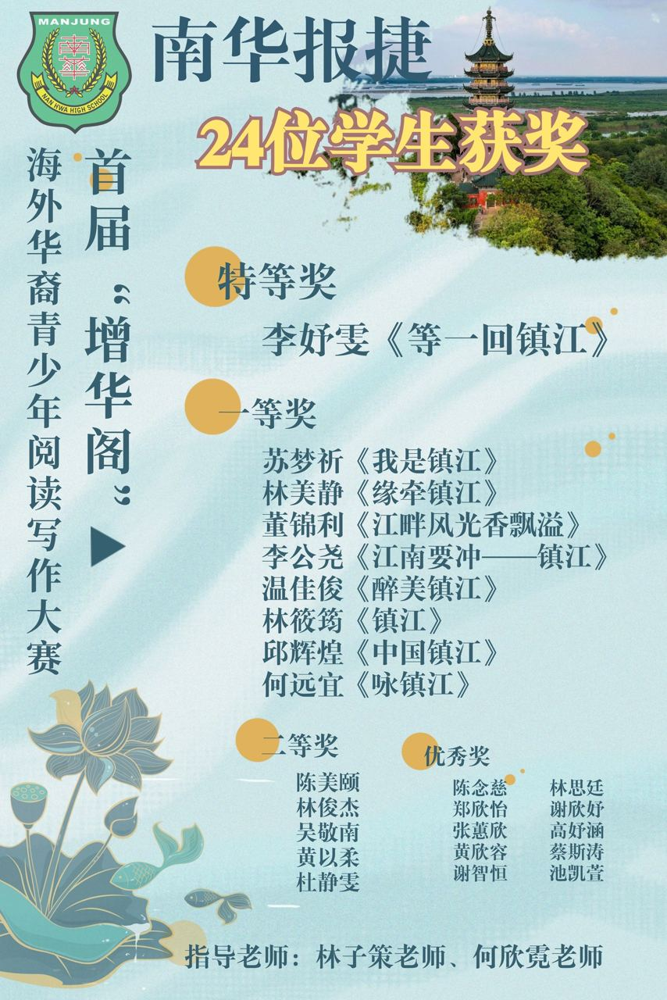
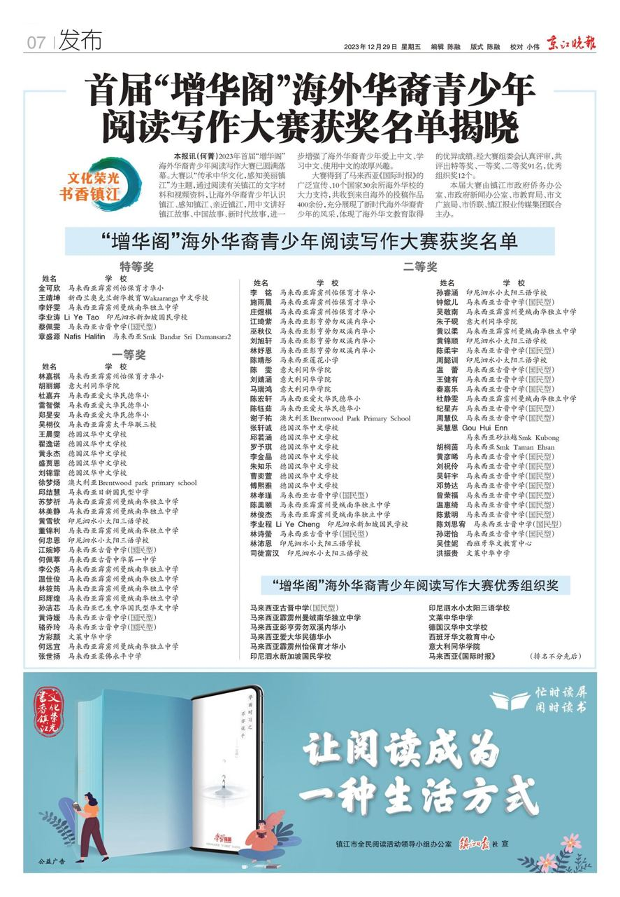
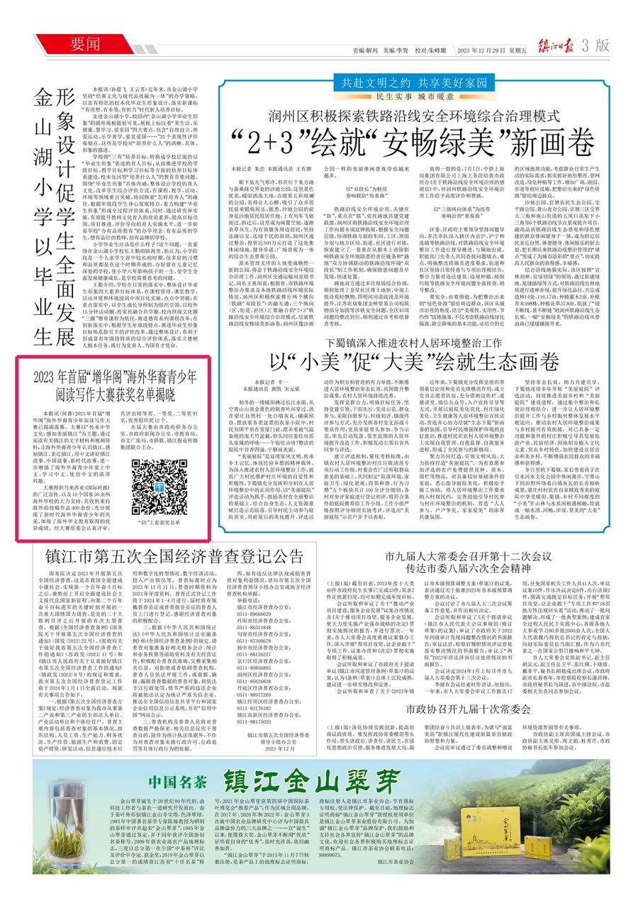

首届增华阁海外写作赛
首届增华阁海外写作赛
南华独中24位学生获奖报捷
本校于“增华阁”海外华裔青少年阅读写作大赛表现亮眼，共有24位学生斩获佳绩，李妤雯同学凭借《等一回镇江》获得特等奖，南华独中更是荣获“优秀组织奖”。
大赛以“传承中华文化，感知美丽镇江”为主题，本次大赛通过阅读有关镇江的文字材料和视频资料，让海外华裔青少年认识镇江、感知镇江、亲近镇江，用中文讲好镇江故事、中国故事、新时代故事，进一步增强了海外华裔青少年爱上中文、学习中文、使用中文的浓厚兴趣。此项比赛获得10 个国家 30余所海外华校的大力支持，共收到来自海外的投稿作品 400 余份，充分展现了新时代海外华裔青少年的风采，体现了海外华文教育取得的优异成绩。经大赛组委会认真评审，共评出特等奖、一等奖、二等奖 91 名，优秀组织奖 12 个。
校长陈丽冰博士表示，中华文化博大精深，多位学生在此次国际舞台表现亮眼，无疑是学生们的光辉时刻，为学生们的才华和辛勤努力而感到无比自豪。这项比赛的成功不仅是学生们辛勤学习的结果，也离不开学校对于中文教育的坚定支持和培养学生综合素养的努力。学生们的获奖不仅仅是对个人努力的认可，更是对南华独中中文教育的肯定。陈校长祝贺学生们取得的优异成绩，并表示“"路虽远行则将至，事虽难做则必成，孩子们应心怀远志，朝着更广阔的天空肆意飞翔"。
以下是南华独中的获奖名单：
【特等奖】
@ 李妤雯
【一等奖】
@ 苏梦祈
@ 林美静
@ 董锦利
@ 李公尧
@ 温佳俊
@ 林筱筠
@ 邱辉煌
@ 何远宜
【二等奖】
@ 陈美颐
@ 林俊杰
@ 吴敬南
@ 黄以柔
@ 杜静雯
【优秀奖】
@ 陈念慈
@ 郑欣怡
@ 张蕙欣
@ 黄欣容
@ 谢智恒
@ 林思廷
@ 谢欣妤
@ 高妤涵
@ 蔡斯涛
@ 池凯萱
电子报链接：https://intimes.com.my/news2a/index.php/2018-07-09-11-40-04/2018-07-09-11-46-38/item/85721-2023
#写作 #镇江 #增华阁 #海外华裔青年
#南华独中 #曼绒 #实兆远


